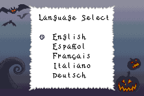
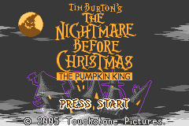

Tim Burton's The Nightmare Before Christmas - The Pumpkin King (USA, Europe) (En,Fr,De,Es,It)
EEPROM 4K
Cartridge Identity
- Game Code
BNCE(FamilyBNC)- Header Title
NIGHTMARE- Maker / Revision
4Q/ rev0- ROM Size
- 8.0 MiB (8,388,608 B)
- Save Media
EEPROM 4K- SHA-256
01417b3bd73133a96ac6b68900cc015306b54be0b909efb171b14a77d0d254b8
Screenshots


Observed Battery Save Layout
- Fill Byte & Active Size
0x00fill · 117–118 / 512 B active (entropy 2.15 bits/B)- Active Offset Ranges
0x0–0x7,0x9–0xF,0x12–0x17,0x1D,0x1F,0x25–0x27,0x15C,0x1A0–0x1A3, +2 more (10 total)- ASCII Magic / Headers
V CBNBGA,0000 RE,NBGA,0 REV CB- Observed Variable Regions
- 2 bytes across 2 spans:
0x17,0x15C - Candidate Checksum/Counter Spans
0x17,0x15C- Integrity Check
- Confirmed at
0x17